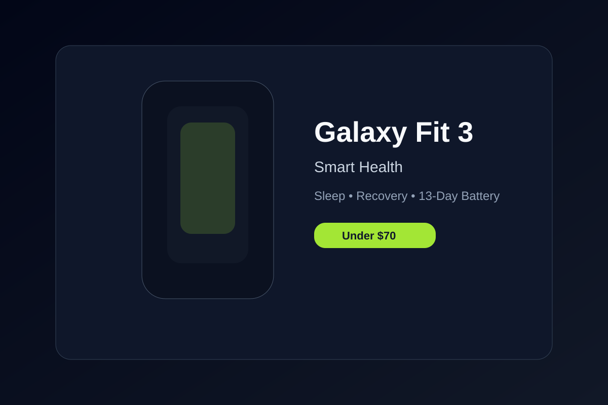

Samsung Galaxy Fit 3 Review: Sleek Health Tracking for Under $70
Lightweight aluminum frame featuring a 1.6-inch AMOLED touchscreen, fall detection, sleep coaching, and 13 days of charge.
The Galaxy Fit 3 blends fitness-band simplicity with a more polished smartwatch feel. Samsung's latest budget tracker carries an aluminum frame, a bright AMOLED display, and a sensory interface that feels much more premium than the class average.
Health features are the core draw. The Fit 3 includes sleep tracking, stress monitoring, heart-rate tracking, and support for automatic activity detection. It also includes Samsung's fall detection and emergency SOS support, which is a meaningful plus for anyone who wants everyday safety features in a sub-$70 wearable.
For many buyers, the real appeal is ecosystem integration. Samsung Health remains one of the easiest places to monitor daily trends, and the Fit 3 fits neatly into that environment. It is light, unobtrusive, and intuitive enough for people who do not want a full-fledged smart watch but still want meaningful health feedback.
One limitation is that it lacks built-in GPS and instead relies on the paired phone for route tracking. That said, for the price, the trade-off is reasonable. The display remains readable, the battery lasts up to 13 days in normal use, and the watch comfortably covers the basics without feeling like a compromise.
For a budget tracker that feels more premium than it is, the Galaxy Fit 3 is an easy recommendation.
Key Takeaways
- Premium aluminum body construction
- Excellent sleep tracking and ecosystem features
- Very affordable entry into the Samsung Health platform
- Solid battery life and easy daily wearability